Faculty
| 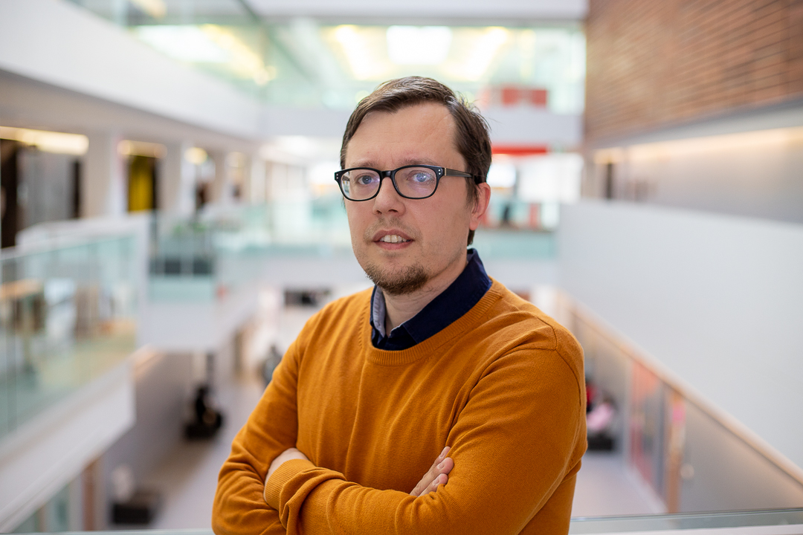 | Dr. Bram Adams |
Grad Students
| 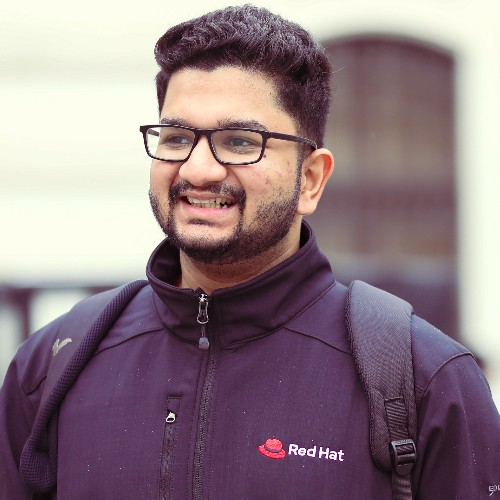 | Rahul
Bajaj Master's student (with Dr. Ahmed E. Hassan) |
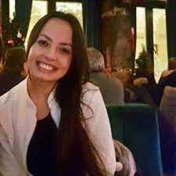 | Isabella
Ferreira PhD student (with Dr. Jinghui Cheng) |
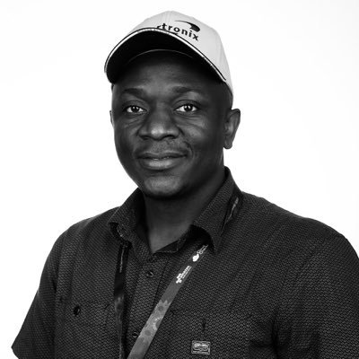 | Armstrong
Foundjem PhD student |
 |
Divya Kamath Master's student (with Dr. Ahmed E. Hassan) |
 |
Ernesto Lang Master's student (with Dr. Ahmed E. Hassan) |
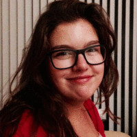 | Doriane Olewicki PhD student (with Dr. Sarath Chandar) |
Alumni
 |
Maryam Abedi Master's student (with Dr. Jinghui Cheng) |
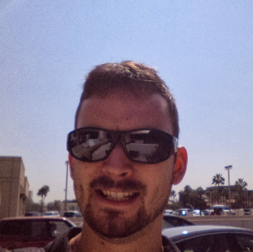 | Vincent
Boisselle Master's, 12/2015 (with Dr. Alexandre Petrenko) |
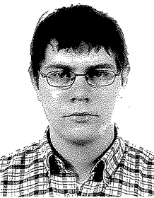 | Mathieu
Bollen Master's, 08/2013 (with Dr. Naji Habra) |
| 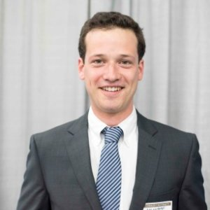 | Alexandre
Courouble Master's, 04/2018 |
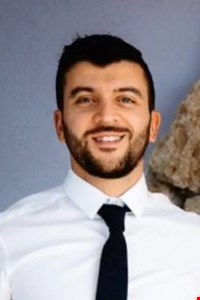 | Giuseppe
Destefanis postdoc, 09/2013-08/2015 (with Dr. Alexandre Petrenko) |
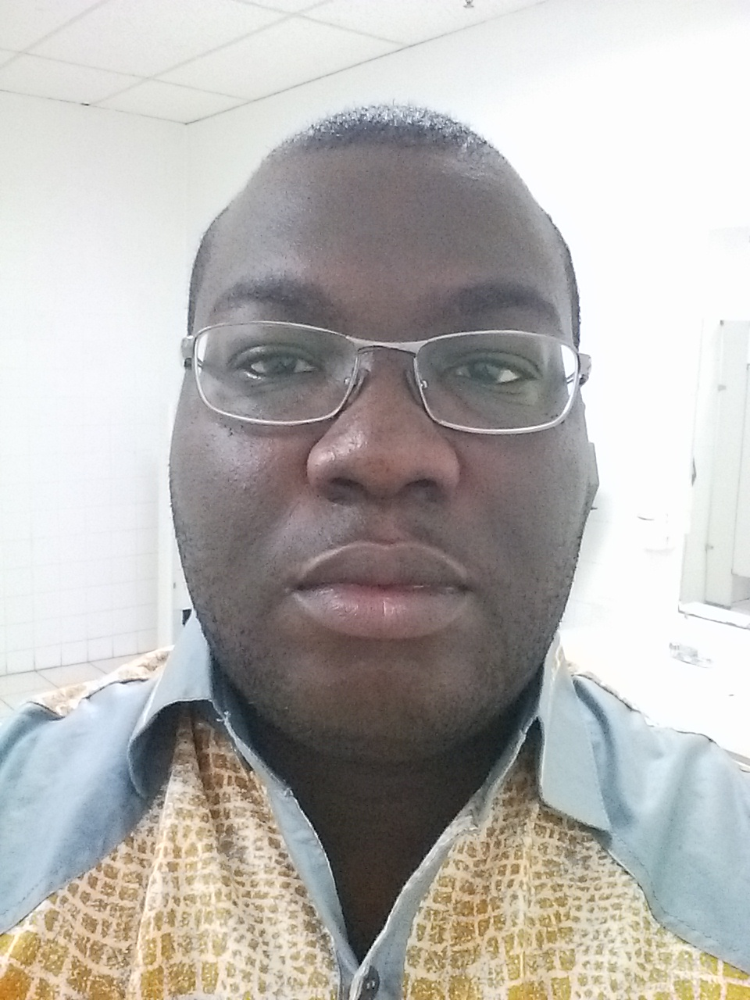 | Ellis E. Eghan postdoc, 11/2019-10/2020 |
| 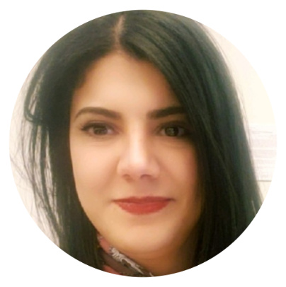 | Manel
Grichi PhD, 08/2020 |
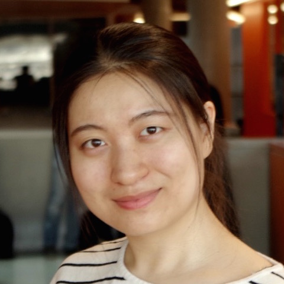 | Yujuan Jiang PhD, 08/2016 |
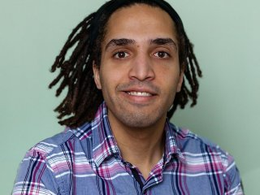 | Shane McIntosh PhD, 07/2015 (with Dr. Ahmed E. Hassan) |
| Parisa
Moslehi PhD, 04/2020 (with Dr. Juergen Rilling) |
Doriane
Olewicki Master's, 08/2020 (with Dr. Kim Mens) |
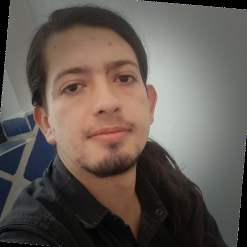 | Javier Rosales
Tovar Master's, 08/2020 |
||
| 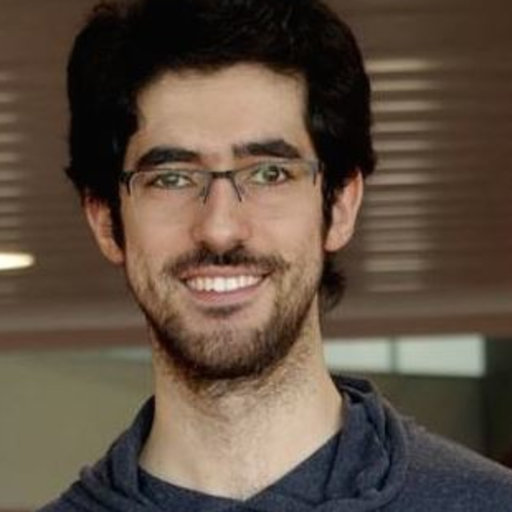 | Mohammed Sayagh PhD, 08/2018 |
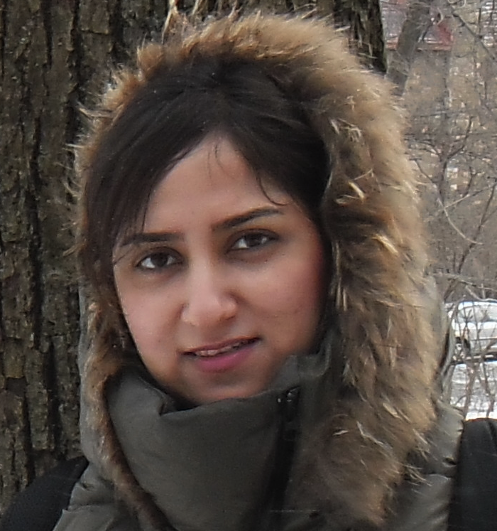 | Parastou
Tourani PhD, 12/2016 |
 |
Shivashree
Vysali Master's, 12/2020 (with Dr. Shane McIntosh) |
|
Mohamed
Yassin postdoc, 04/2020-04/2021 |
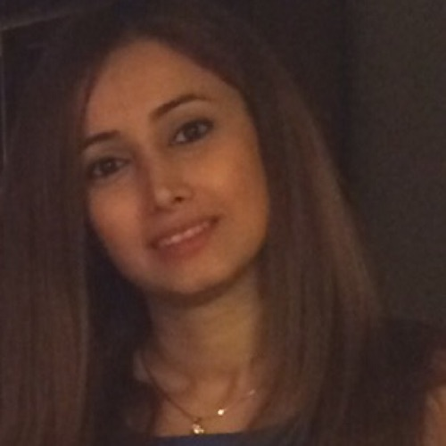 | Mahdis
Zolfagharinia Master's, 12/2017 (with Dr. Yann-Gaël Guéhéneuc) |